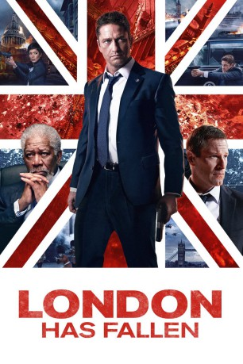
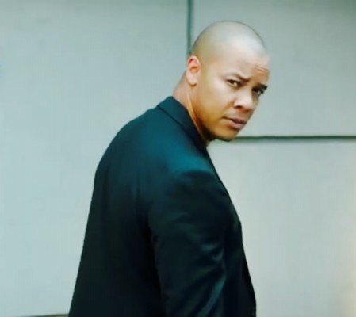

#4033 London Has Fallen
 gesehen am 20.07.2016
gesehen am 20.07.2016
 
 IMDB-Wertung: 5.9 / 10
IMDB-Wertung: 5.9 / 10  Tomatometer: 26
Tomatometer: 26  Metascore: 0
Metascore: 0 
Nach dem plötzlichen, rätselhaften Tod des britischen Premierministers ist seine Beerdigung ein Pflichttermin für die Staatsoberhäupter der westlichen Welt. Selbstverständlich nimmt auch US-Präsident Benjamin Asher daran teil, begleitet von seinem Leibwächter Mike Banning. Doch was als die bestgeschützte Veranstaltung auf dem Planeten beginnt, entwickelt sich schnell zu einem tödlichen Spießrutenlauf, bei dem das Leben der mächtigsten Anführer der Erde auf dem Spiel steht. Nur mit knapper Not kann Banning das Leben des US-Präsidenten schützen und mit ihm in den Londoner Untergrund fliehen. Doch die Hintermänner der Verschwörung verlangen seine Auslieferung und nehmen die britische Hauptstadt ins Visier. Während Vizepräsident Trumbull versucht, das gnadenlose Ultimatum hinauszuzögern, nimmt Banning den Kampf auf…
Jahr: 2016
Dauer: 99 Minuten
FSK: 16
Land: England Studio: UFATonspuren: DTS - ,
Untertitel:
Auflösung: 1080p (1920x808) Größe: 5386 MB
Genre: Action, Thriller, Drama, Krimi
Regisseur: Babak Najafi
Drehbuch: Sara St. Onge
Soundtrack:
Darsteller:
 Alon Aboutboul als Aamir Barkawi
Alon Aboutboul als Aamir Barkawi Waleed Zuaiter als Kamran Barkawi
Waleed Zuaiter als Kamran Barkawi- Mehdi Dehbi als Sultan Mansoor
- Shivani Ghai als Amal Mansoor
 Owen Davis als JSOC Officer
Owen Davis als JSOC Officer Gerard Butler als Mike Banning
Gerard Butler als Mike Banning Aaron Eckhart als Benjamin Asher
Aaron Eckhart als Benjamin Asher-  Michael Wildman als Agent Voight
 Radha Mitchell als Leah Banning
Radha Mitchell als Leah Banning- Julian Kostov als Aide
- Stacy Shane als Stern-Faced Advisor
 Penny Downie als Home Secretary Rose Kenter
Penny Downie als Home Secretary Rose Kenter Patrick Kennedy als MI5 Intel John Lancaster
Patrick Kennedy als MI5 Intel John Lancaster Colin Salmon als Chief Hazard
Colin Salmon als Chief Hazard Angela Bassett als Lynne Jacobs
Angela Bassett als Lynne Jacobs Morgan Freeman als VP Allan Trumbull
Morgan Freeman als VP Allan Trumbull- Deborah Grant als Doris
 Andrew Pleavin als Agent Bronson
Andrew Pleavin als Agent Bronson Nigel Whitmey als Canadian PM Robert Bowman
Nigel Whitmey als Canadian PM Robert Bowman- Julia Montgomery Brown als Bowman's Wife
- Sadao Ueda als Driver
- Elsa Mollien als Viviana Gusto
- Philip Delancy als Jacques Mainard
- Jean Baptiste Fillon als Steward
- Kemi-Bo Jacobs als Intel Officer
 Sean O'Bryan als NSA Ray Monroe
Sean O'Bryan als NSA Ray Monroe Jackie Earle Haley als DC Mason
Jackie Earle Haley als DC Mason Robert Forster als General Edward Clegg
Robert Forster als General Edward Clegg Melissa Leo als Defence Secretary Ruth Macmillan
Melissa Leo als Defence Secretary Ruth Macmillan- Terence Beesley als Fire Dept. Head
 Tim Woodward als General
Tim Woodward als General- Nikesh Patel als Pradhan
 Charlotte Riley als MI6 Jacquelin Marshall
Charlotte Riley als MI6 Jacquelin Marshall- Bryan Larkin als SAS Lieutenant
 Dilyana Bouklieva als Police Woman , uncredited
Dilyana Bouklieva als Police Woman , uncredited Bern Collaco als Police Officer , uncredited
Bern Collaco als Police Officer , uncredited Alexander Cooper als Passerby , uncredited
Alexander Cooper als Passerby , uncredited Michael Dickins als Barkawi's Mercenary , uncredited
Michael Dickins als Barkawi's Mercenary , uncredited Nick Donald als Armed Police Officer , uncredited
Nick Donald als Armed Police Officer , uncredited- Joe Fidler als Agent Henderson , uncredited
- Ivaylo Grancharov als Secret Service , uncredited
 Michael Haydon als Commuter , uncredited
Michael Haydon als Commuter , uncredited Philip Howard als MI5 Operative , uncredited
Philip Howard als MI5 Operative , uncredited Bron James als London Commuter , uncredited
Bron James als London Commuter , uncredited Jorge Leon Martinez als Secret Service , uncredited
Jorge Leon Martinez als Secret Service , uncredited- Scott Mahoney als Secret Service , uncredited
- Jim Maidment als SO19 Armed Police , uncredited
 Anthony Milton als Secret Service Agent , uncredited
Anthony Milton als Secret Service Agent , uncredited- Nigel Murfitt als City banker , uncredited
- Jason Nicholls als City Passer-by , uncredited
Datei: X:\3-Trilogie(G-M)\Has Fallen\London Has Fallen (2016, FSK16, 1920x808).mkv seit 14.07.2016
Festplatte: HD Collection-2(A-Z)-3(A-M)
 Alle Filme aus Gruppe '3-Trilogie(G-M)\Has Fallen'
Alle Filme aus Gruppe '3-Trilogie(G-M)\Has Fallen'